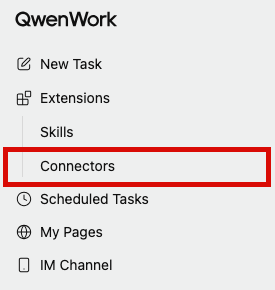
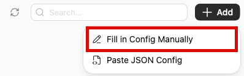
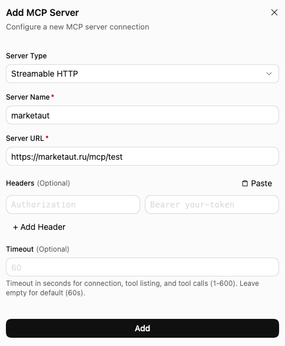
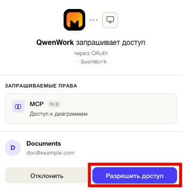
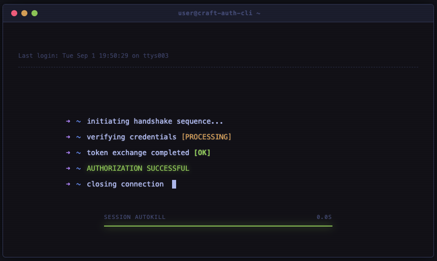
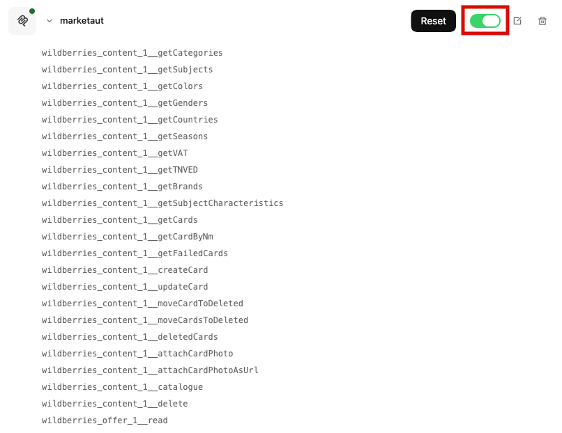
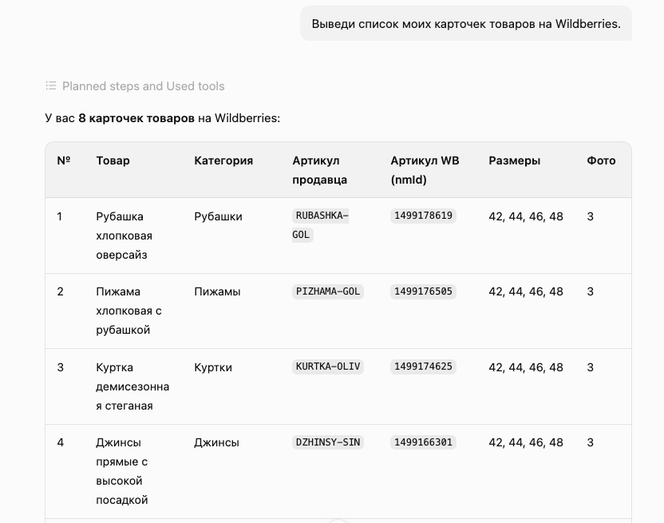
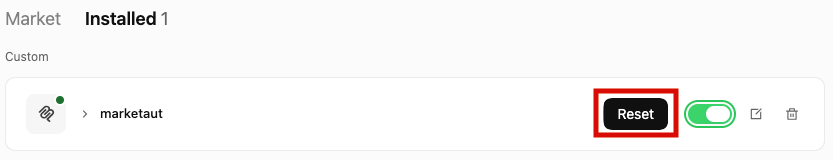

Общая информация
В этом разделе описан процесс подключения QwenWork к платформе MarketAut.
Подключение выполняется через протокол MCP.
После подключения QwenWork сможет использовать инструменты и данные, доступные в вашей диаграмме MarketAut, напрямую из диалога.
Перед началом подключения убедитесь, что:
- аккаунт Wildberries успешно создан и настроен;
- диаграмма создана, настроена и запущена;
- получен MCP-адрес на домашней странице MarketAut.
Важно
Добавление собственного MCP-коннектора доступно только в приложении QwenWork для компьютера. В веб-версии QwenWork кнопка добавления пользовательского коннектора отсутствует. Скачать приложение можно на официальном сайте QwenWork.
Установка QwenWork
- Перейдите на официальный сайт QwenWork;
- Скачайте приложение для своей операционной системы;
- Установите и запустите QwenWork;
- Войдите в свой аккаунт.
Подключение
- Запустите приложение QwenWork;
- В боковом меню откройте раздел Extensions;
- Выберите Connectors.

- В правом верхнем углу нажмите + Add;
- Выберите Fill in Config Manually.

Откроется окно Add MCP Server.
Заполните следующие поля:
- Server Type — выберите
Streamable HTTP; - Server Name — укажите удобное название без пробелов, например
marketaut; - Server URL — вставьте персональный MCP-адрес, скопированный из блока подключения агента на домашней странице MarketAut;
- Headers — оставьте пустыми;
- Timeout — оставьте пустым или укажите
60.
Пример MCP-адреса:
https://marketaut.ru/mcp/test
Название сервера не должно содержать пробелы. Если поле подсвечивается красным и появляется сообщение
Server name cannot contain spaces, удалите пробелы и повторно введите название, напримерmarketaut.

После заполнения полей нажмите Add.
Авторизация
После добавления MCP-сервера откроется страница авторизации MarketAut.
Проверьте запрашиваемые права и нажмите Разрешить доступ.

После успешной авторизации появится сообщение:
AUTHORIZATION SUCCESSFUL

Дождитесь завершения процесса авторизации. Авторизация завершена, когда появляется сообщение
AUTHORIZATION SUCCESSFUL, а зелёная полоса в нижней части окна доходит до конца.
После этого окно можно закрыть вручную и вернуться в приложение QwenWork.
Проверка подключения
- Откройте Extensions → Connectors;
- Перейдите во вкладку Installed;
- Найдите коннектор
marketaut; - Раскройте коннектор;
- Убедитесь, что переключатель справа включён и отображается зелёным цветом.
Зелёный переключатель означает, что коннектор MarketAut активен и QwenWork может использовать его инструменты в задачах.
Ниже названия коннектора отображается список доступных инструментов MarketAut.

Если переключатель включён и инструменты отображаются в списке, подключение успешно завершено.
Чтобы временно запретить QwenWork использовать MarketAut, выключите переключатель. Удалять коннектор для этого не требуется.
Использование QwenWork
Откройте новую задачу QwenWork и отправьте запрос, для выполнения которого необходимы данные вашего магазина Wildberries.
Например:
Выведи список моих карточек товаров на Wildberries.

QwenWork обратится к доступным инструментам MarketAut и выведет полученные данные.
Если QwenWork получил данные из MarketAut, подключение настроено корректно.
Обновление инструментов
Если в диаграмме MarketAut появились новые инструменты или были изменены существующие, обновите их список в QwenWork.
- Откройте Extensions → Connectors;
- Перейдите во вкладку Installed;
- Найдите коннектор
marketaut; - Нажмите кнопку Reset.

Кнопка Reset сбрасывает текущее подключение и запускает его повторно, чтобы QwenWork заново получил актуальный список инструментов MarketAut.
При необходимости повторно подтвердите авторизацию. После обновления раскройте коннектор и проверьте список доступных инструментов.